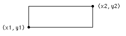

| drawbox | graphics procedure |
| Syntax | drawbox (x1, y1, x2, y2, Color : int)
|
| Description | The drawbox procedure is used to draw a box on the screen with bottom left and top right corners of (x1, y1) to (x2, y2) using the specified Color.
 |
| Example | This program draws a large box, reaching to each corner of the screen using color number 1. The maxx and maxy functions are used to determine the maximum x and y values on the screen. The point (0,0) is the left bottom of the screen and (maxx, maxy) is the right top.
setscreen ("graphics")
drawbox (0, 0, maxx, maxy, 1)
|
| Execute | |
| Details | The meaning of the Color number depends on the current palette. See the palette statement. The screen should be in a "graphics" mode. See the setscreen procedure for details. If the screen is not in a "graphics" mode, it will automatically be set to "graphics" mode.
|
| See also | setscreen, maxx, maxy and the various draw… procedures.
|